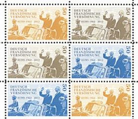

Le mercredi 2 janvier 2013 La Poste mettait en vente anticipée le timbre-poste commémorant le 50ème anniversaire du traité de l’Elysée au guichet temporaire, installé au « Carré d’Encre », 13 bis rue des Mathurins, dans le 9ème arrondissement à Paris puis dans les bureaux de poste à partir du 3 janvier 2013 ainsi que par correspondance. Ce document philatélique a été imprimé en 1,5 millions d’exemplaires, avec une pochette émission commune : 2 timbres français et 2 timbres allemands à 6,00 € et en unitaire au prix de : 0,80 €.
Émission particulière, puisque le sujet appartient aux très officielles commémorations de « l’année franco-allemande 2012 – 2013 », a été initiée par François Hollande, Président de la République française et Angela Merkel chancelière de la République fédérale d’Allemagne le 8 juillet 2012 à l’occasion de la commémoration du 50ème anniversaire de la visite du chancelier Adenauer à Reims.
Reflétant directement les deux grands évènements historiques de la réconciliation franco-allemande, et ce pour le plus grand le bonheur des philatélistes, l’émission de janvier 2013 entrera dans l’histoire postale de nos deux pays et dans cet esprit on peut véritablement parler d’une année philatélique franco-allemande !
A l'heure d'Internet et des courriels le timbre reste, encore aujourd’hui, un objet de mémoire et de collection. La philatélie est une véritable activité de loisirs, culturelle et accessible à tous, qui rassemble encore plusieurs milliers de passionnés en France et en Allemagne.
Emission postale historique par excellence, il faut cependant souligner qu’elle suppose de la part du collectionneur averti, ainsi que du simple amateur, un minimum de connaissance des évènements ayant environné et provoqué la naissance des documents postaux collectionnés. Les émissions communes franco-allemandes n’échappent pas à cette règle.
Pour ce faire La Poste édite généralement un document d’information ou des souvenirs philatéliques retraçant succinctement l’historique de la période historique traitée.
Le timbre franco-allemand, commémorant le 50ème anniversaire du traité de l’Elysée, célèbre un évènement majeur survenu en Europe. L’opinion publique de part et d’autre du Rhin et en Europe peut en constater et en apprécier la portée. La coopération franco-allemande fait de la solidarité de ces deux pays une garantie de la paix et du progrès pour l’Europe entière. C’est le sens donné aux timbres émis à l’occasion de ces deux derniers anniversaires.
Au fil des ans, et ce depuis l’émission du premier timbre commémoratif en 1973, les éléments graphiques, sont quant à eux, généralement classiques.
A l’occasion du 10èmeanniversaire du traité de l’Elysée, il n’est plus question pour que la France et l’Allemagne de croiser le fer mais de mélanger les couleurs de leurs emblèmes nationaux c’est le message et le postulat du timbre dessiné par Heinz et Hella Schillinger émis en 1973.
Plus sobrement, l’émission de 1988 célébrant le 25ème anniversaire du traité de l’Elysée quant à lui représente le Chancelier allemand Konrad Adenauer et le Président français Charles de Gaulle, cosignataires du traité. Personnages historiques de premier plan dans l’histoire franco-allemande.
En 2003, afin de sensibiliser un public jeune, les timbres représentent dans le cadre d'une émission conjointe avec l'Allemagne, un timbre de 0,46 € pour le 40ème anniversaire du traité sur la coopération franco-allemande.
Le timbre allemand de 0,55 € est illustré d'un dessin de Tomi Ungerer : deux arches de ponts (une française, une allemande) se sont suffisamment rapproché l'une de l'autre pour former un pont au-dessus d'un précipice. Le timbre porte cette mention d'anniversaire également en allemand : 40 Jahre Vertrag über die deutsch-französische Zusammenarbeit. L'illustration du timbre français est le visage d'une jeune femme floutée et en nuances de gris ; sur ses joues, et en couleurs, se trouvent maquillés les drapeaux des deux États). Le timbre carré de 3,8 cm est dessiné par Corinna Rogger.
Pour célébrer le 50ème anniversaire de la visite officielle du chancelier Adenauer à Reims en 1962 un bureau de poste temporaire avec une vente de souvenirs philatéliques a été organisé par la Société des amis de la cathédrale de Reims et le club philatélique rémois. Pour cette occasion un tampon premier jour, œuvre de l’artiste Roland Irolla, fut réalisé. Parmi les souvenirs philatéliques on notera celui-ci vendu avec des timbres d'usage courant montrant Marianne aux côtés de Gaulle et d’Adenauer.
La symbolique de la réconciliation est très forte dans cette émission historique car Marianne n’est pas un symbole neutre. Rappelons nous : après la seconde guerre mondiale la liberté renaît, la France revit, elle se donne les traits d’une femme : Marianne. Une Marianne victorieuse dont le bonnet phrygien rappelle les origines républicaines. Depuis Marianne est toujours sur le courrier guidant les forces de la Libération, accueillant à nouveau l'Alsace et la Lorraine, rendant hommage à ses morts. Ainsi le fait d’associer notre Marianne sur ce timbre commémoratif était judicieux.
Dans ses Mémoires, le général de Gaulle expliquera le choix de Reims en 1962, « symbole de nos anciennes traditions, mais aussi théâtre de maints affrontements des ennemis héréditaires. A la cathédrale, le premier Français et le premier Allemand unissent leurs prières pour que, des deux côtés du Rhin, les œuvres de l’amitié remplacent pour toujours les malheurs de la guerre. ». C’est pour cette raison que cet événement, qualifié d’historique, a amené le président Hollande et la chancelière Merkel à choisir ce cinquantenaire pour lancer l’année franco-allemande.
Genèse du timbre commémoratif du 50ème anniversaire du traité de l’Elysée
Afin de commémorer cette seconde date importante de l’histoire commune, l’ORFACE interpelle, dès le 11 avril 2011, la Poste dans ce sens, en renvoyant notamment aux l’émissions commémoratives antérieures (voir supra).
La démarche vient tout naturellement du fait que le président de l’ORFACE est philatéliste et qu’il avait initié la création du timbre du 40ème anniversaire du Traité alors qu’il occupait les fonctions de chef de cabinet de la Commission Interministérielle de Coopération France-Allemagne en 2003.
La demande de ce timbre-poste a été officiellement provoquée auprès de Phil@poste le 11 avril 2011 en souhaitant l’inscription d’un timbre au programme philatélique 2013. Pour se donner toutes les chances de succès l’ORFACE contacte également M. Eric BESSON, ministre alors chargé de l’Industrie de l’Energie et de l’Economie numérique le 3 mai 2011. En effet le programme philatélique annuel est fixé par arrêté ministériel, après avis de la Commission des programmes philatéliques chargé d’opérer une sélection parmi toutes les demandes qui lui sont proposées, deux avant sa réalisation
Saisis de la demande de l’ORFACE, Eric BESSON, transmet à La Poste, le dossier qui est alors naturellement constitué pour la Commission des programmes philatéliques. Le processus est alors engagé qui se concrétisera par la réunion en 2011 afin de préparer la première partie du programme des émissions de timbres à réaliser en 2013.
Début juin 2011, la Commission des programmes philatéliques étudie le projet de l’ORFACE présenté par Phil@poste et inscrit le timbre à la première partie du programme philatélique 2013, par un arrêté du 25 juillet 2011 du ministre Eric BESSON.
A l’occasion d’une réception donnée à l’Ambassade de la République fédérale d’Allemagne, en l’honneur du dessinateur PLANTU pour son ouvrage « Drôle de peuple », le président de l’ORFACE propose au célèbre dessinateur d’être le créateur de ce nouveau timbre.
Plantu, germanophile convaincu, accepte avec enthousiasme l’idée et c’est ainsi que par courrier en date du 6 février 2012 qu’une proposition est faite en ce sens au Ministre chargé de l’Industrie de l’Energie et de l’Economie numérique. Il s’avère, plusieurs mois plus tard, que le choix se reportait à nouveau sur Tomi Ungerer.
Pour tous les philatélistes et les acteurs de la coopération bilatérale la commémoration, dignement célébrée, fera date dans l’histoire philatélique franco-allemande dont l’ORFACE aura été un modeste acteur.